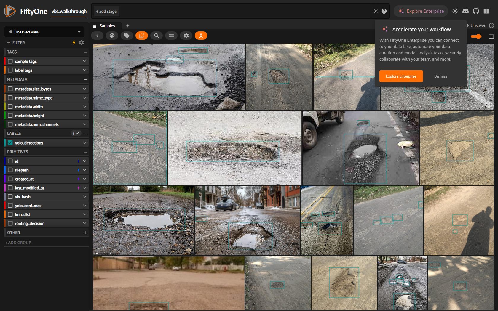
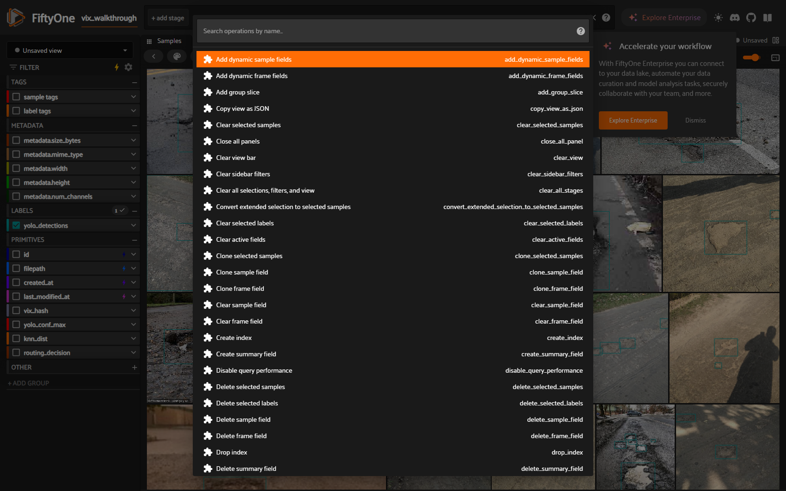
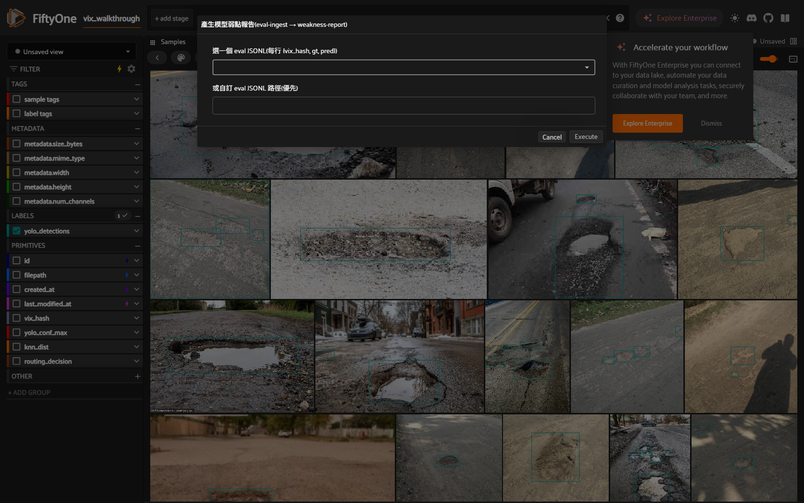
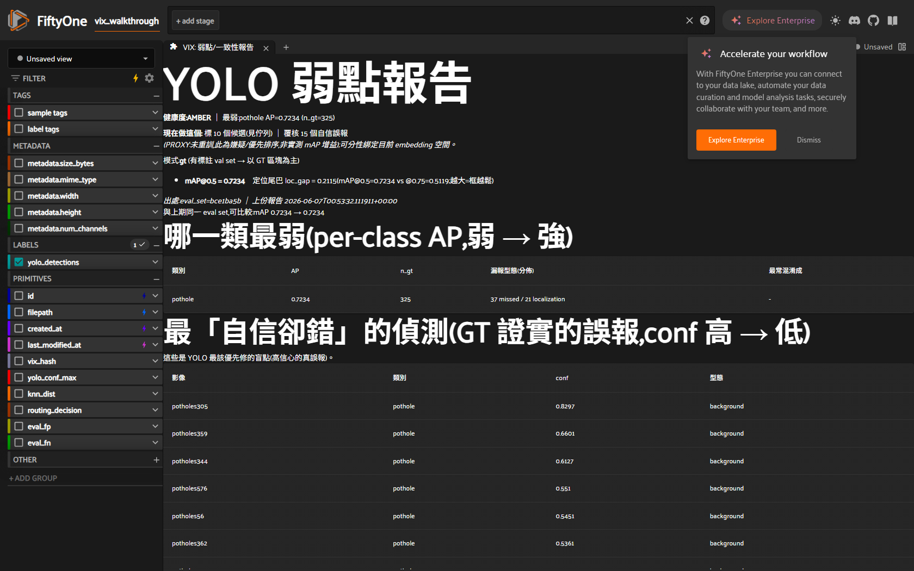
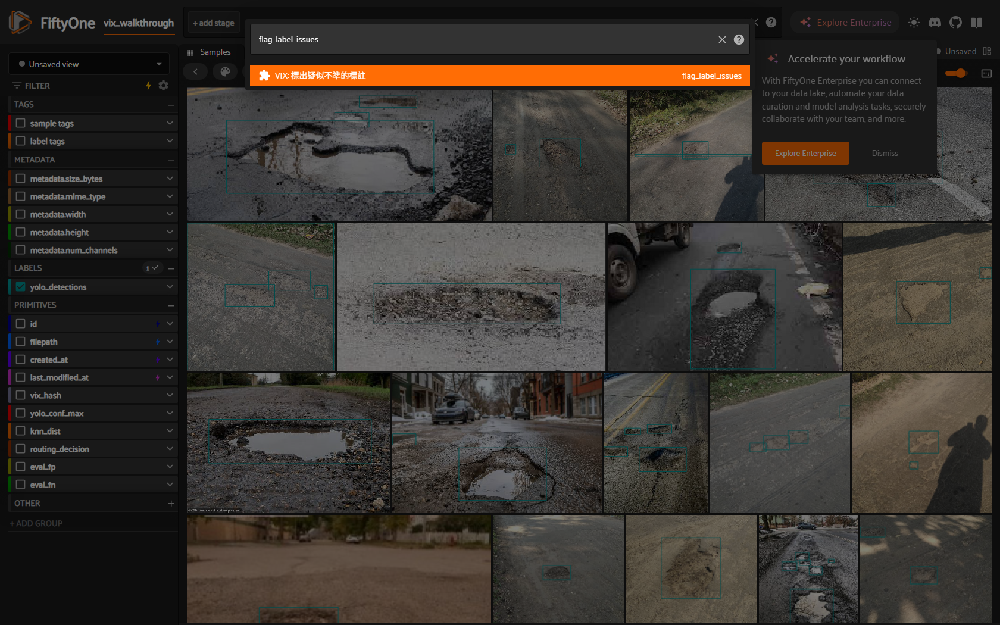
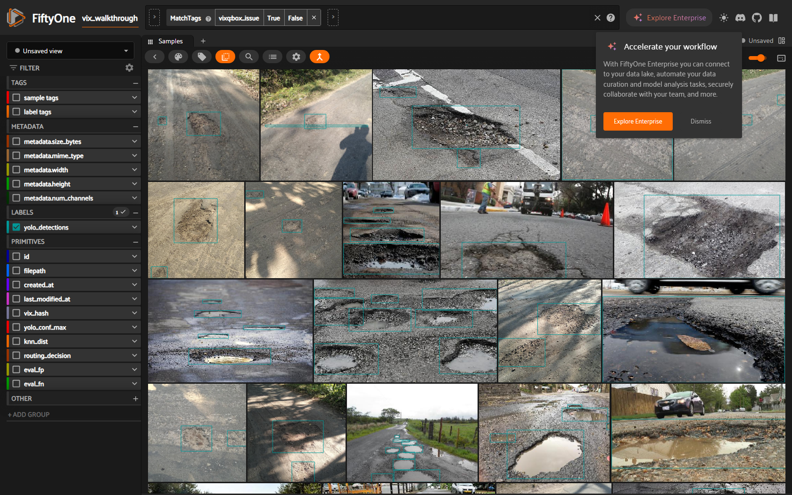
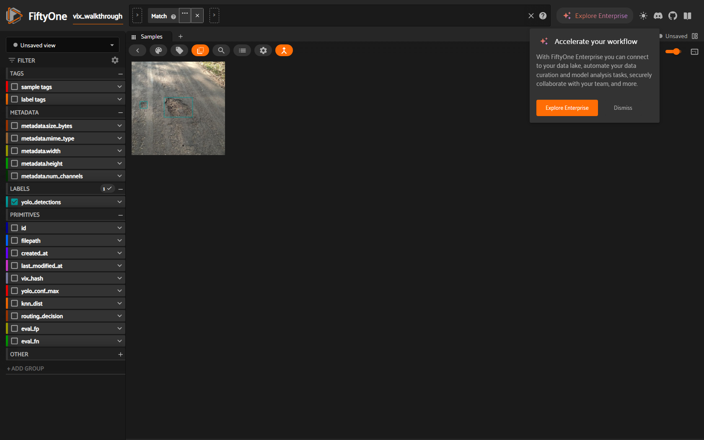
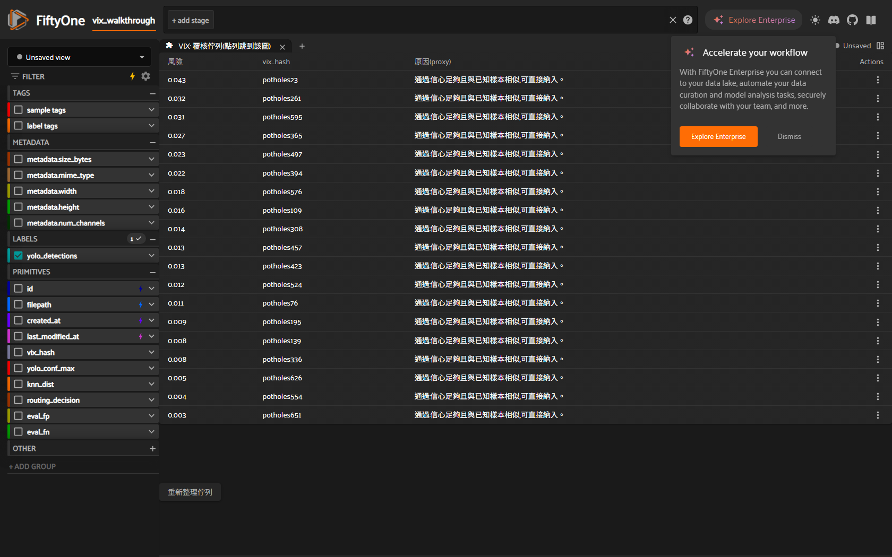

Playwright 實機截圖 · 真 patHole 資料 + 真訓練的 YOLOv8n(mAP@0.5 0.7234)
flag_label_issues 同理。為示範「抓不準標註」故意種了 4 個壞框,其餘為真標註。每個關鍵步驟另有非視覺交叉驗證(eval_results.json 寫出、vixq tag 數、hash 鏈完整)。重現:python docs/examples/dogfood_walkthrough.py。真 patHole 影像 + GT/模型預測框,載入 live FiftyOne App。

按 ` 打開 operator browser —— 所有 VIX 動作都從這裡叫。

選 VIX: 產生模型弱點報告(選 eval),下拉自動列出 workspace 裡的 eval JSONL(每行 {vix_hash, gt, pred}),也可填自訂路徑。等同 CLI 的 vix eval-ingest + vix weakness-report。

VIX: 弱點/一致性報告 面板:per-class AP、最「自信卻錯」(GT 證實的高信心誤報)、健康度、PROXY 誠實標記。本次真實 mAP@0.5 = 0.7234。

選 VIX: 標出疑似不準的標註 —— 一鍵跑 audit_labels(疑似標錯類別)+ box_qa(框幾何:退化/截邊/面積·長寬離群)。

頂端 view bar 已套 MatchTags vixq:box_issue —— 格狀只剩被標記的影像。本次種了 4 個壞框,VIX 共標出 28 張(4 個種的 + 24 個真實面積/長寬離群)。

從清單點開,直接檢視那個有問題的標註框。

VIX: 覆核佇列 面板:按風險排序的 風險 / vix_hash / 原因(proxy) 表,列動作 看圖 / 確認→golden / 誤報排除 —— 整個覆核迴圈在一個面板完成。
